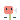

the eight seats in a session's row· 20 px, grey, without the ground
example1 planner (lane)
example2 builder (lane)
example3 reviewer (lane)
example4 research (lane)
example5 
go-to-market (lane)
example6 designer (lane)
example7 auditor (lane)
example8 coordinator (lane)
example9 — (lane)
The last row is a word outside the eight: its slot stays, empty.
tried, not chosen· the coordinator's variants 1 and 3; variant 2 is the eighth row above
variant1 coordinator (variant 1)
variant3 coordinator (variant 3)